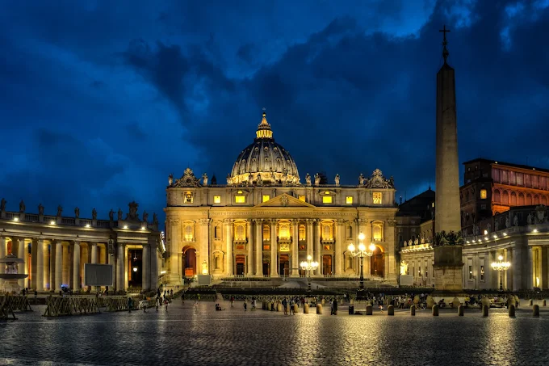
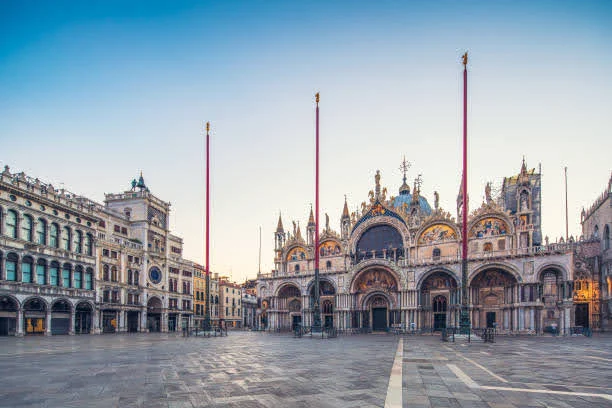
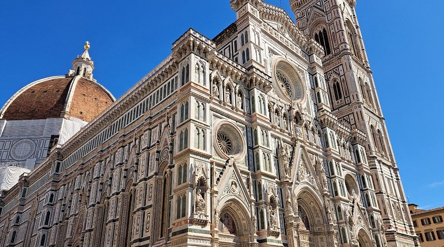

O Coliseu de Roma, erguido no século I d.C., é o maior anfiteatro da Antiguidade e o maior símbolo do Império Romano. Famoso por abrigar épicos combates de gladiadores perante dezenas de milhares de espectadores, o monumento é hoje uma das Sete Maravilhas do Mundo Moderno.

O Vaticano é o menor país do mundo, com apenas 0,44 km², e é a sede da Igreja Católica. Localizado dentro de Roma, o Vaticano abriga a Basílica de São Pedro, a Capela Sistina e os Museus Vaticanos, que possuem uma das maiores coleções de arte do mundo.

A Praça de São Marcos é o coração de Veneza, famosa por sua arquitetura deslumbrante e atmosfera encantadora. É rodeada por importantes edifícios históricos, incluindo a Basílica de São Marcos e o Campanário, oferecendo uma experiência única aos visitantes.

Um passeio de gôndola pelos canais de Veneza é uma experiência romântica e única. As gôndolas são embarcações tradicionais venezianas, e navegar pelos canais oferece uma perspectiva encantadora da cidade, com suas pontes, palácios e atmosfera mágica.

O Duomo de Florença, oficialmente conhecido como Catedral de Santa Maria del Fiore, é uma das mais impressionantes catedrais góticas do mundo. Sua cúpula icônica, projetada por Filippo Brunelleschi, é um marco arquitetônico e oferece vistas panorâmicas da cidade.